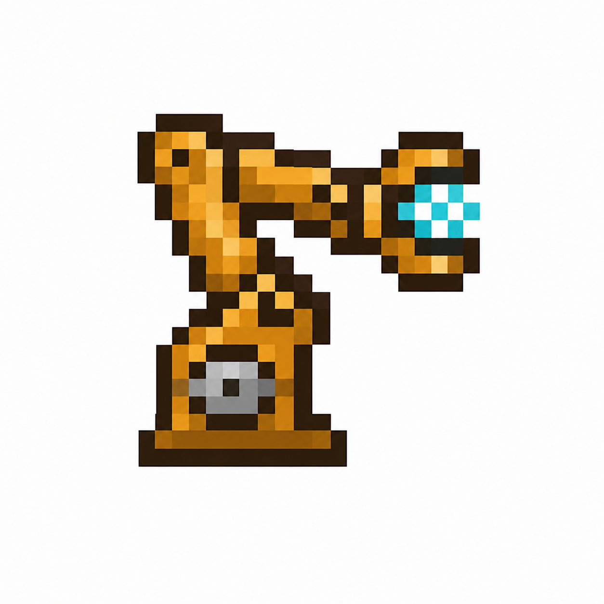
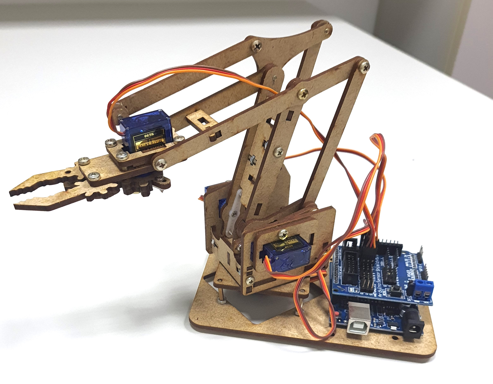
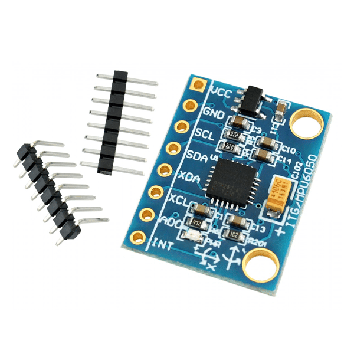
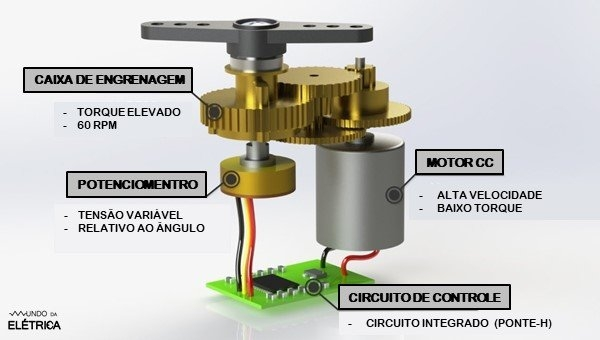

📍 Localização
Laboratório L401-1, Bloco A
Campus Santo André – UFABC
Av. dos Estados, 5001 - Bangu
📅 Data e Horário
Sábado, 15 de Agosto
Horário: 08h00 às 12h00
Carga horária: 4 horas (Prático)
🎯 Público-Alvo
Comunidade Interna:
- Alunos de Graduação das Engenharias (UFABC)
Comunidade Externa:
- Alunos do Ensino Médio de escolas públicas e privadas
👥 Vagas & Nível
Total: 30 vagas
Nível: Totalmente focado em Iniciantes (não exige pré-requisitos).
- Período de Inscrição: De 13/08 a 14/08 (até às 23h).
- Critério de Preenchimento: As inscrições serão confirmadas por ordem de inscrição até o limite das 30 vagas.
- Aguarde a confirmação oficial da sua inscrição via e-mail após o preenchimento do formulário.

Sobre o WorkshopO workshop é planejado especificamente para o público iniciante e visa desmistificar a Inteligência Artificial Embarcada (TinyML) através do controle de um braço robótico articulado em MDF acionado por gestos do pulso.
Durante a aula, os alunos aprenderão passo a passo a capturar movimentos humanos com o sensor MPU6050, treinar um modelo simples de Aprendizado de Máquina e embarcar o código no Arduino Uno. O robô executará tarefas automáticas ao reconhecer os padrões de movimento em tempo real.

Hardware & Componentes Utilizados
Aprenda na prática como integrar sensores inerciais e atuadores mecânicos:

Módulo MPU6050
Acelerômetro e Giroscópio de 6 eixos responsável por capturar os gestos do pulso do usuário.

Microservomotores SG90
4 motores responsáveis pela articulação da base, elevação, projeção e garra do braço.
Estrutura MDF 4-DOF
Chassi mecânico leve e articulado para tarefas de manipulação de objetos (pick and place).
Fluxo de Aprendizado e Implementação
O workshop ensina de forma guiada o ciclo de um projeto real de Inteligência Artificial Embarcada (TinyML) em 4 etapas acessíveis:
Coleta de Dados de Gestos (Sensoriamento)
Uso do MPU6050 fixado ao pulso para capturar variações de aceleração e rotação. Os dados são enviados via Serial e organizados em um arquivo .csv.
Treinamento do Modelo de IA no PC
Processamento do dataset e treinamento de um classificador leve de Aprendizado de Máquina (Árvore de Decisão / k-NN) para distinguir os 4 gestos-comando.
Software: Python (scikit-learn, pandas, Google Colab)Transpilação e Deploy no Arduino (TinyML)
Conversão automática do modelo treinado em código C++ nativo e gravação no Arduino Uno SMD (que possui 2KB de RAM).
Ferramenta: micromlgen + Arduino IDEAtuação Robótica & Demonstração Prática
Cada gesto reconhecido em tempo real dispara sequências pré-programadas de movimentos nos microservomotores, executando a tarefa de pegar e transportar o objeto.
Resultado: Controle em tempo real por gestosGarantir Minha Vaga
Inscrições abertas de 13/08 a 14/08 (até às 23h).
Vagas limitadas (30 alunos) preenchidas por ordem de inscrição!